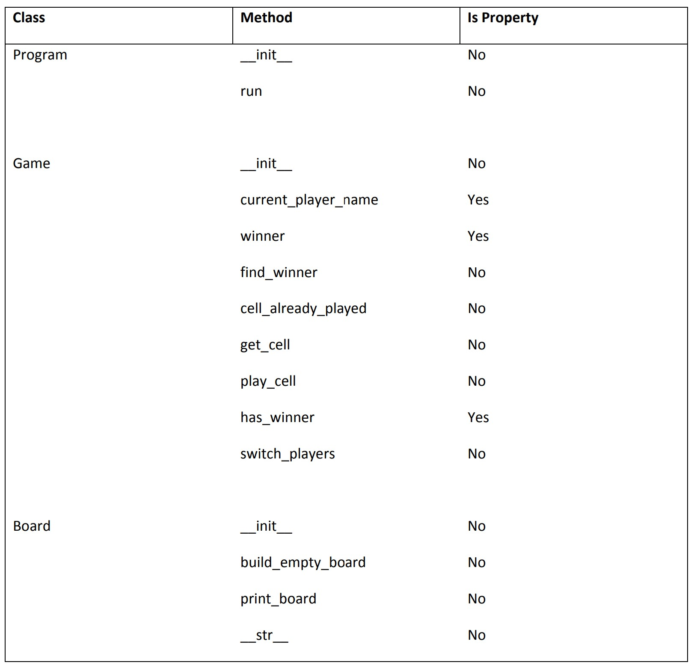

In this workshop, we will refactor a tic‐tac‐toe game consisting of a series of functions into classes.
These instructions assume you have Python 3 installed. You can use any OS you choose (OS X, Windows, or Linux).
Open the game.py file the before folder. This code is the working game written using functions.
Before you get started, here is a quick review of defining classes.
Now your task will be to define 3 classes:
The functionality of the game should be spread across three classes. Here is one such partitioning.
In addition to this basic structure, each of these classes will need a few fields (e.g. board should have a cells field).
Using this guidance, covert the function‐based game to a class‐based game. It should run identically.